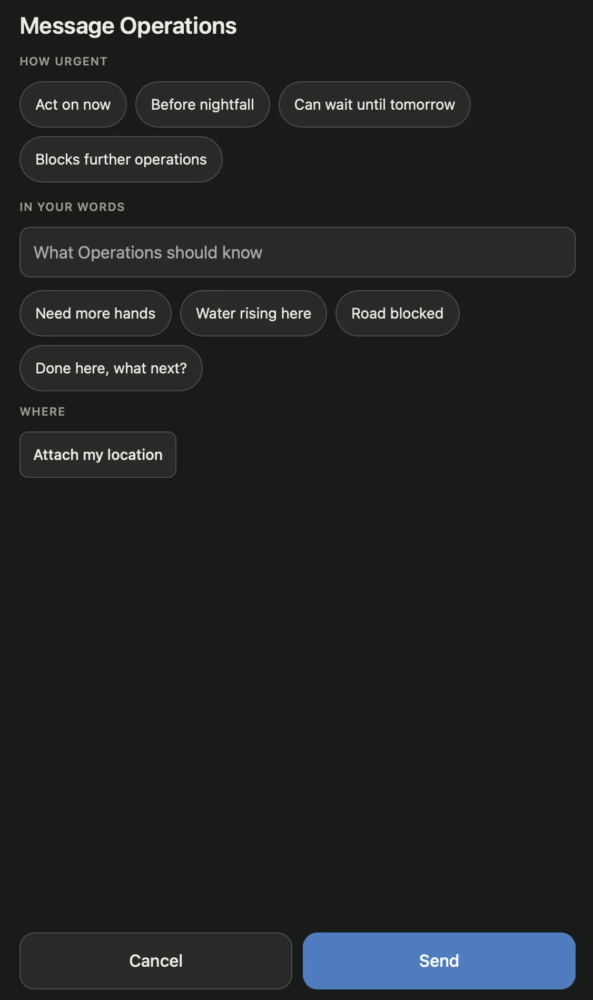
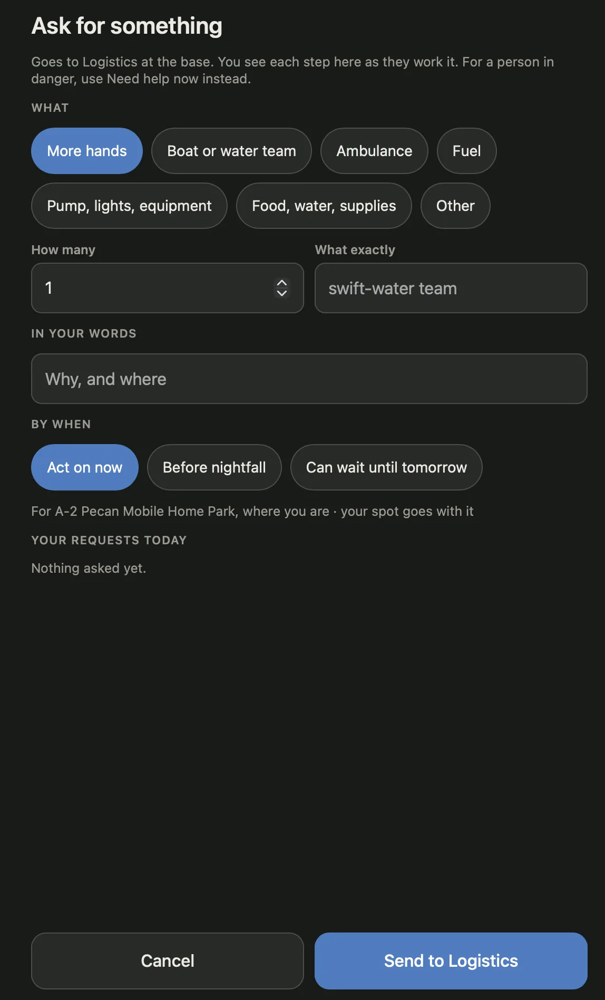

Tell the base: Message Operations and Ask for something
Todd, 18 October:I think that we can make this page visually better. The urgency seems to be a scale, maybe we should show it like a scale. But we shouldn't confuse the scale of need for Message Operations with the Ask for Something; take a holistic look at these two and help me find a way to make these as good as possible, given a disaster's needs.Drawn at v71, before anything was built; built as v74 on all six decisions as recommended (migration 0038; docs/punchlist.md, section 33). Both sheets tell the base one thing: what, how soon, where, send. One order, one scale, two colours, so a unit learns it once and never mistakes one for the other. "Blocks further operations" comes off the scale: it is not a time. Need help now stays apart and red. Made-up data; press the buttons: the light and dark frames of one sheet are the same phone, and Send reaches the base below.
Today, as built the two sheets at v71, as Todd sent them

Message Operations. Four pills for urgency that read as a list of equals, and the fourth is not a time. Three rows of pills that look the same: the urgency, then the suggestions under the box. Urgency is asked before the words. Where is a button, and the map comes only after.

Ask for something. Two lines of intro. The same urgency words, this time last, and "Act on now" lit before anyone chose it. The place is a line of grey text. Where the message asks for its spot, the request takes it quietly.
What the two have in common is more than what sets them apart: both tell the base one thing and ask how soon and where. Today they ask in a different order and draw the same question two ways.
- Urgency is a time scale, now · before dark · tomorrow, and a scale should look like one: one bar, hot to cool.
- "Blocks further operations" is a consequence, not a point on that scale. It says what happens to the unit's work, so it goes under the scale as a flag, on its own.
- The two sheets must not be mistaken: a message is read and answered by Operations; a request is worked by Logistics in steps. Same order, different colour, the button names who gets it.
- Fewer words: one line of purpose, headings of one or two words, the "for a person in danger" sentence as a small red link.
- Gloves and rain: every control 44 px or taller, the chosen state unmistakable in both themes, Send under the thumb.
One anatomy for both the same five slots in the same order; what each holds
Message Operations
Ask for something
1 · Title one line of purpose
Message OperationsOperations reads it and answers here.
Ask for somethingLogistics works it; you see each step here.
2 · What
Your words, in the box. Four quick starts under it, quote-styled: tap one and it is in the box.
The kind (the seven chips), how many, what exactly, then your words.
3 · How soon "Needed by" on the request
One scale on one bar, the same control on both: NowBefore darkTomorrow hot to cool. A second tap clears it. Under it, one flag: We're stuck until this is sorted (the request's: until it comes).
4 · Where
One switch row, the same on both: Your spot goes with it, the division named under it, on when the phone has a fix. The message shows the small map and the pin to drag once it is on; the request names the division it is for.
5 · Send the button names who gets it
Send to Operations
Send to Logistics
The foot
Someone in danger? Need help now, small and red, the same on both. Need help now itself stays apart, red, one tap.
Blue is the message (the app's own colour, Operations). Teal is the request (Logistics): the icon by the title, the switch and the Send button carry it, nothing else. The scale's colours are the scale's, red · orange · blue, whichever sheet it sits on, so a lit step means the same thing everywhere.
The sheets, at 375 px light and dark are the same phone; press things, then look at the base below
1Message Operations. One line says who reads it. The box first: the thing to say is the first thing asked. The four quick starts sit under it as words in quotes, smaller, no border; tap one and it is in the box, and they go once the box has words, as today.
- How soon is the scale: three steps on one bar, Now · Before dark · Tomorrow, hot to cool, 52 px tall. A step lit fills with its colour and gets a tick; nothing lit is allowed and means what it says today, no word on urgency.
- We're stuck until this is sorted is a flag under the scale, off by default. On, it turns red with a tick: a different shape from the scale's fill, so the two never read as one control.
- Where is a switch, on when the phone has a fix: the division under it, the small map with the pin to drag, the pin in the step's colour. Off hides the map and the message goes without a spot.
- Send to Operations in blue, the red link above it. Cancel puts the sheet back as it was.
2Ask for something. The same five slots in the same order, teal. The kind chips as today, nothing lit for you; how many and what exactly beside each other; your words under them.
- Needed by is the same scale, the same words, the same colours. The flag reads "until it comes". Nothing lit means no rush, which the base already has words for.
- Where is the same switch row, already on: "Your spot goes with it · For A-2 Pecan Mobile Home Park, where you are". Off, the request is still for A-2 and goes without the spot.
- Your requests today stays on the sheet under Where, each with its dot and its step; Logistics' answer lands here (press Approve on the base below).
- Send to Logistics in teal; Send with no kind chosen says so.
The scale's states what the unit sees, and how each reads on the base and in the 214
The home panel orders by step, Now first, then Before dark, Tomorrow, nothing; among equals the stuck ones first. The count badge on the requests' heading, "N to act on now", counts the Now step and every stuck one. Today's four-way rank (now, blocking, nightfall, tomorrow) becomes three steps and a flag.
The base, the same moment the home panel's rows and the 214 follow the phones above; Acknowledge and Approve reach the phone
Messages, the home panel's rows as messageRowHtml draws them. The step's badge as today (red, orange, blue), the new Stuck badge beside it, outlined so it is not a second step. Acknowledge is Operations' answer; the phone's inbox sees it.
Requests (213RR), a card per open request as requestCardHtml draws it: the step, Stuck, the status, then who and where. Approve writes a line and the phone's row changes. The base's own form keeps its By when select with the same three words and No rush.
The 214, written by the database, never by the app: the message with its words in brackets after who to whom, the request with them after the division. "stuck" is the flag's word on paper too. Under it, Resources needed as the briefing and the sitrep print it.
Decided here, and yours to decide
Decided here (say if any is wrong)
- One order on both sheets: title and one line of purpose, what, how soon, where, send. Headings are one or two words. Nothing is lit for you: not a kind, not a step.
- The scale is one control, drawn by one function (scaleHtml on the phone), three steps on one bar with the hot-to-cool line under them, 52 px, a second tap clears. Its colours are the badges' today: red, orange, blue. Its words are the badges' too, so what the unit pressed is what Operations reads.
- The flag sits under the scale on both sheets, off by default, and reads as a different shape when on (a red outline and tint with a tick, not a fill). The message's words are "We're stuck until this is sorted", the request's "We're stuck until it comes".
- The quick starts are words in quotes, smaller, no border, 44 px to tap, gone once the box has words. The list is QUICK (and QUICK_DESK for a shelter desk) as today.
- Where is one switch row on both, on when the phone has a fix. The message shows the small map and the pin under it; the request names the division. Off on the request still leaves the division on it.
- Two colours: blue for the message (the app's own), teal for the request, on the icon, the switch and the Send button only. The button names who gets it. If one blue reads better, the icon and the button's words still tell them apart.
- The red link at the foot of both, "Someone in danger? Need help now", 44 px. Need help now itself is untouched.
- Report a hazard keeps its chips for now. It reads the same list, so its words shorten with it; drawing it as the scale is its own walk.
Built as v74 · 18 October
- All six as recommended: the column (0038, the old "blocking" rows now Now and stuck), Now · Before dark · Tomorrow on the phone, the badges and the 214, Stuck as the flag's word, the flag on the request too, nothing chosen on a request as no rush, the spot on by default. Hazards keep their four words and chips until their own walk. The list below is kept for the record.
Yours to decide
- Where "stuck" lives. Recommended: a column, blocking boolean on ic_messages and ic_requests (migration 0038); the urgency check loses its fourth word, and the rows that said "blocking" become Now and stuck in the same migration. The other way keeps the fourth value and only draws it apart: no migration, but then a message is stuck or now, never both, the request can never say it, and the base cannot sort by step and flag. The column costs one migration and one rule test; it is the one that says the true thing.
- The words on the scale. Recommended: Now · Before dark · Tomorrow everywhere, on the phone, the badge and the 214 ("Unit 3 to Operations (now, stuck): …"). The other way keeps "Act on now / Before nightfall / Can wait until tomorrow" on the base and the paper and shortens only the phone, two lists to keep in step.
- The flag's word on the base. Recommended: Stuck, the same word the unit pressed, on the badge and in the 214. The other is Blocking, ICS's word and today's code word; plainer on a form, less plain at a glance.
- The flag on the request too. Recommended: yes, the same slot and the same column, because "needed now" and "we are idle until it comes" are different things to Logistics, and one anatomy is the point. The other way puts it on the message only, as today's data has it.
- The request's default. Recommended: nothing chosen means no rush and the unit picks; today every request is "Act on now" unless someone unpicks it, which makes the word worth less each time. The other way keeps today's quiet default.
- The spot on the message by default. Recommended: on when the phone has a fix, the switch turns it off; nearly every message is about a place, and the request already does this. The other way is today's: off until tapped.
What a build would touch a v41-sized release: one migration if the flag becomes a column, rules.js, both views, the mock, a rule test, two suites
The phone
- field/index.html: #s-compose and #s-ask rewritten in the one order; the icon by the title, the purpose line, #compose-scale / #ask-scale, #compose-flag / #ask-flag, #compose-where / #ask-where as the switch row, the red link, Send to Operations.
- js/field/main.js: scaleHtml(sheet, chosen) and flagHtml drawn by drawCompose and drawAsk; state.composeU and state.ask.urgency keep the step (empty by default), state.composeStuck / state.ask.stuck the flag; state.composeLoc set from sensors.pos when the sheet opens; sendCompose / sendAsk send blocking; the inbox's messageRow draws the Stuck badge.
- css/field.css: .scale, .step, .flag, .where, .sw, .quick, .ph-ic, the teal token --ask in both themes.
The words, once
- js/shared/rules.js: URGENCY becomes the three steps with the new words; STUCK_WORDS (the two sentences, the badge's word); urgencyLabel, URGENCY_RANK (three steps, the flag first among equals), urgencyWords(u, blocking) for the 214 and the briefing ("now, stuck"); dev/test-rules.mjs.
- SQL: ic_urgency_label says the three words; ic_log_message (0010) and ic_request_after (0015) add ", stuck"; hazards keep the fourth word in ic_urgency_label until their own walk.
The base
- js/base/ui.js: messageRowHtml and requestCardHtml draw .badge.stuck; requestsHtml's By when select and its count badge; URG_RANK; the briefing's Resources needed line; the hazard rows read the shorter words with no change of their own.
- css/shared.css: .badge.stuck; .badge.urg-blocking and .mpin.urg-blocking go.
The mock, the tests
- dev/mock-supabase.js: DEFAULTS (blocking: false), the two checks, the log lines in afterInsert, one stuck message in the seed, SEED_VERSION.
- Rule test supabase/tests/tellbase.sql, rolled back: the three words and nothing else pass the check; a stuck message's line says "(now, stuck)"; a request's "for A-2, before dark, stuck"; the old "blocking" rows read Now and stuck.
- Smoke: fieldReports (the message's words and badge, the spot on by default) and sections (the request's line and card); every suite that reads "act on now" or "before nightfall" (the hazards in fieldReports, the parbyname and newcomer suites) reads the new words.
- sw.js bumps; docs/punchlist.md gets its section; docs/walkthroughs.md a re-walk of both sheets. A day or two.
-- 0038_stuck.sql (sketch), only if the flag becomes a column alter table ic_messages add column blocking boolean not null default false; alter table ic_requests add column blocking boolean not null default false; -- the rows that said it the old way say it the new way update ic_messages set urgency = 'now', blocking = true where urgency = 'blocking'; alter table ic_messages drop constraint ic_messages_urgency_check; alter table ic_messages add constraint ic_messages_urgency_check check (urgency in ('', 'now', 'nightfall', 'tomorrow')); -- ic_requests already allows the three; ic_hazards keeps its four for now create or replace function ic_urgency_label(p text) returns text … -- = urgencyLabel(): -- 'now' | 'before dark' | 'tomorrow'; 'blocking' stays 'blocks further operations' for a hazard create or replace function ic_log_message() … -- 0010's body, the bracket rebuilt: -- ' (' || concat_ws(', ', nullif(ic_urgency_label(new.urgency), ''), -- case when new.blocking then 'stuck' end) || ')' -- → 'Unit 3 to Operations (now, stuck): Road blocked at the bridge · location attached' create or replace function ic_request_after() … -- 0015's body, the same words: -- 'Unit 3 asked for 2 pumps for A-2, now, stuck: to drain the cul-de-sac' -- rules.js export const URGENCY = [['now', 'Now'], ['nightfall', 'Before dark'], ['tomorrow', 'Tomorrow']]; export const STUCK_WORDS = { badge: 'Stuck', message: "We're stuck until this is sorted", request: "We're stuck until it comes" }; export function urgencyWords(u, blocking) { … } -- 'now, stuck' / 'before dark' / 'stuck' / ''
| Where | Today | Drawn here |
|---|---|---|
| The phone | Four pills: Act on now · Before nightfall · Can wait until tomorrow · Blocks further operations | One bar: Now · Before dark · Tomorrow; the flag under it |
| The badge | Act on now (red) · Blocks further operations (red) | Now (red) · Stuck (red outline), side by side |
| The 214, a message | Unit 3 to Operations (act on now): … | Unit 3 to Operations (now, stuck): … |
| The 214, a request | Unit 3 asked for 2 pumps for A-2, act on now: … | Unit 3 asked for 2 pumps for A-2, now, stuck: … |
| Resources needed | 2 pumps for A-2, act on now · asked | 2 pumps for A-2, now, stuck · asked |
| The data | urgency in now · nightfall · tomorrow · blocking | urgency in now · nightfall · tomorrow, blocking true or false |